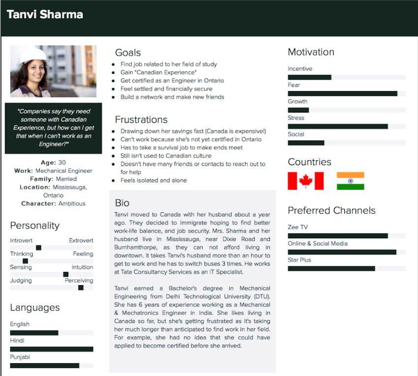
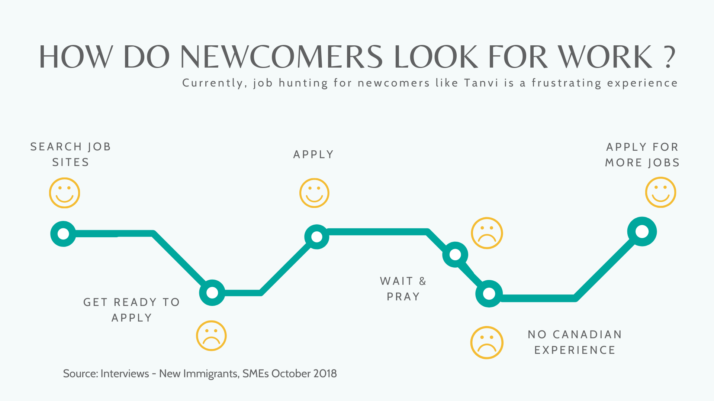
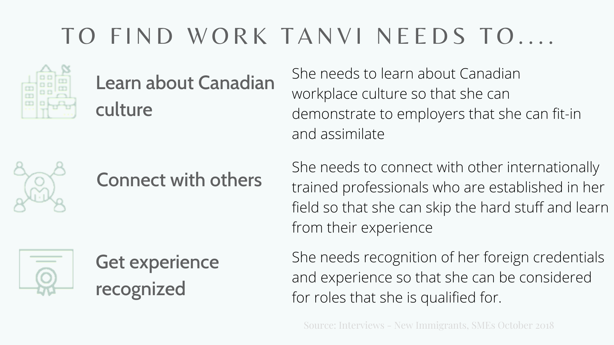
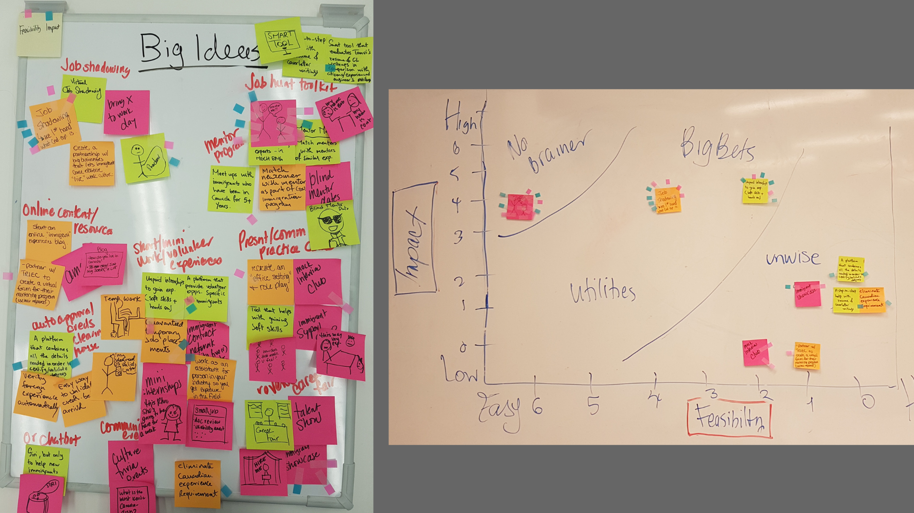

Mentor Match
Mentor Match is an online platform that helps new immigrants start a successful career in Canada by helping them gain Canadian experience and build thier professional network
Introduction
The Problem
Many skilled workers come to Canada and can’t find work in their field despite having the right technical skills.
•The government of Canada predicts that almost one million immigrants will enter the country over the next three years
•Most of them will be highly educated and skilled professionals
•Most of these skilled workers face challenges finding work even 4 years after arrival
•This largely due to three key issues: Level of English language proficiency, \fForeign experience and credentials are not being recognized, lack of Canadian Experience
•Only 24% of professional immigrants are working in field of expertise. This can lead
to underemployment and feelings of anxiety and uncertainty of how to proceed.
The Goal
To design a solution to meet the needs of the new immigrant community in Canada.
The Team
Karina Abreu, Emily Bergeron, Rhea Makund
My Role user research, competitive intelligence research, usability testing, research & evaluation data analysis
The Timeline: 12 weeks
The Process:
phases:
• User Research & Analysis
• Requirements Analysis
• Prototypes
• Evaluation & Next Steps
User Research & Analysis
Methods
User Interviews: Semi-structured interviews with 7 new immigrants from past 4 years
Digial Ethnography: Study of online social interactions between new immigrants
SME Interviews: Semi-structured interviews with 2 Subject Matter Experts (SME)
Key Findings
•Newcomers arrive as skilled workers & have an expectation they will find work in their field
•Newcomers have few contacts/no network
•Employers want applicants to have Canadian experience, as international experience & credentials are not recognized
•Newcomer services focus on basic needs, no focus on getting new Canadians job ready
•Learning about Canadian norms and culture are important for successfully landing a job
•The current situation creates a system where skilled workers are resentful, underemployed, and hoping from one survival job to the next
Using our research findings, we created a persona to better understand our users, thier goals and frustrations.
Meet Tanvi Sharma.

Watch the following video to learn more about Tanvi's story.

Requirements Analysis
We used the findings from our research study to define a solution to help new immigrants like Tanvi gain Canadian experience.

Next, our team conducted an ideation session where we came up with a series of ideas that could help an help Tanvi learn about Canadian workplace culture,
connect her with other professionals in her field and get recognized for her experience and knowledge.
We combined the ideas we generated into bigger themes, voted and prioritized ideas based on their impact in addressing Tanvi’s pain points -
and the feasibility of executing each.

Mentorship came out as the winning idea. Based on our primary and secondary research, it was clear that new immigrants
had a strong need for advice and guidance throughout their journey in finding relevant work in Canada.
Prototyping
Evaluation & Next Steps
Ipsum dolor